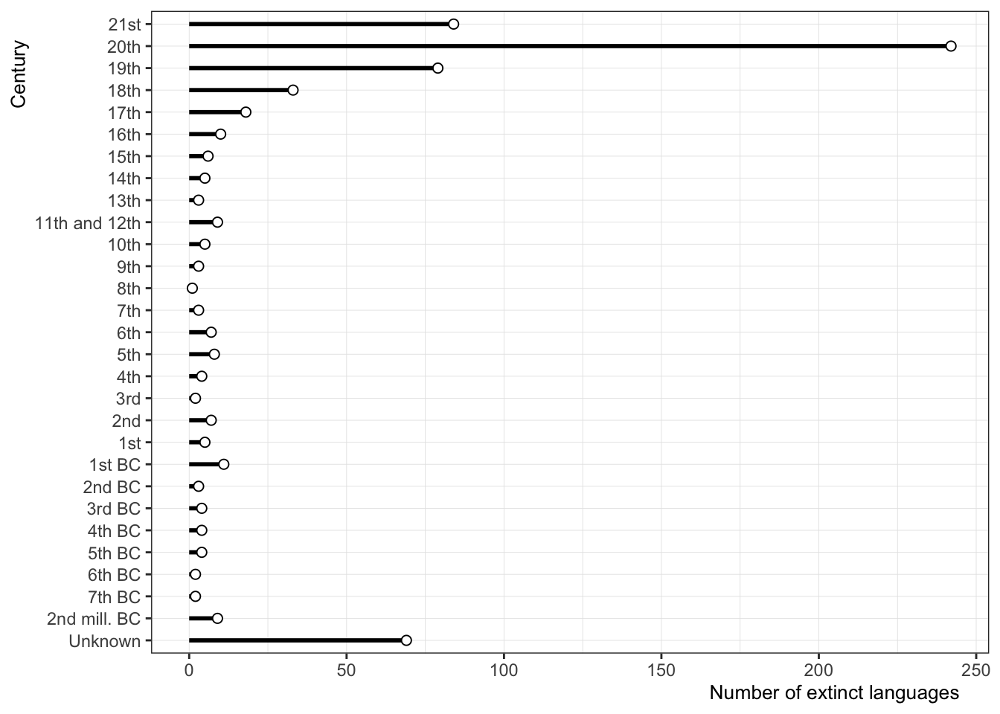
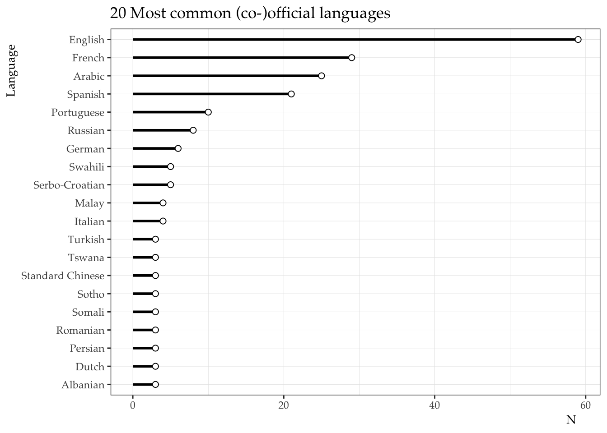
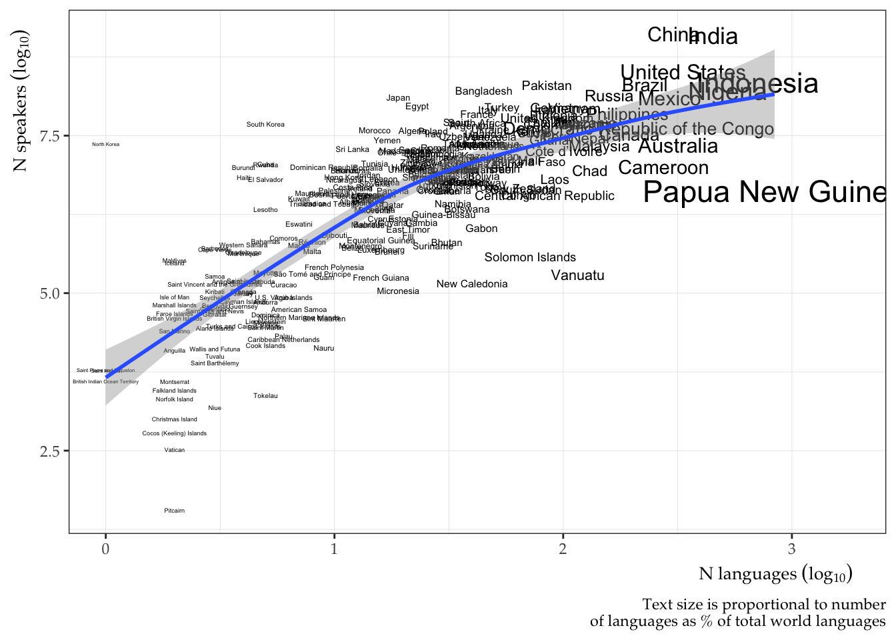

worldlanguages

An R Package of Data Sets About the World’s Languages.
Last update: 2024-12-31
Overview
The worldlanguages package provides a series of data sets with information about the languages of the world. All the data is freely available and scraped from the internet.
Datasets
- extinct_languages
- language_names
- languages_by_country
- n_countries_by_language
- n_languages_by_country
- n_words_by_language
- native_speakers
- total_speakers
extinct_languages
- A long-form data set scraped from wikipedia containing an information about 642 extinct languages.
- Information on the data, language family, region, and terminal speakers is provided if available.
- The table was curated by scraping multiple tables from:
https://en.wikipedia.org/wiki/List_of_languages_by_time_of_extinction
## Rows: 642
## Columns: 7
## $ language <chr> "Mednyj Aleut", "Yahgan", "Wukchumni dialect of Tule-…
## $ date <chr> "5 October 2022", "16 February 2022", "25 September 2…
## $ century <chr> "21st", "21st", "21st", "21st", "21st", "21st", "21st…
## $ language_family <chr> "Mixed Aleut–Russian", "Isolated", "Yok-Utian (propos…
## $ region <chr> "Commander Islands, Russia", "Magallanes, Chile", "Ca…
## $ terminal_speaker <chr> "Gennady Yakovlev[1]", "Cristina Calderón[2]", "Marie…
## $ notes <chr> "", "", "", "", "", "", "", "", "", "", "", "", "", "…
language_names
- A long-form data set scraped from wikipedia containing 599 languages.
- The data were scraped from: https://en.wikipedia.org/wiki/List_of_language_names
## Rows: 599
## Columns: 4
## $ language_en <chr> "'Phags-pa", "Aari", "Aasáx", "Abaza", "Abellen", "Abenaki…
## $ language <chr> "ꡖꡍꡂꡛ ꡌ", "Aari", "Aasá", "Aбаза бызшва", "Ayta Abellen", …
## $ notes <chr> "Formerly Used in: the People's Republic of China , the Re…
## $ is_extinct <lgl> TRUE, FALSE, TRUE, FALSE, FALSE, TRUE, FALSE, FALSE, FALSE…
languages_by_country
- A long-form data set scraped from wikipedia containing a list of the languages spoken in 212 different countries.
- The data set distinguishes between official, regional, minority, and national status, as well as widely spoken languages.
- The data were scraped from: https://en.wikipedia.org/wiki/List_of_official_languages_by_country_and_territory
## Rows: 212
## Columns: 6
## $ country_region <chr> "Abkhazia", "Afghanistan", "Albania", "Algeria", "An…
## $ official_language <chr> "Abkhaz, Russian", "Persian (Dari), Pashto", "Albani…
## $ regional_language <chr> "", "Uzbek, Turkmen, Pashayi, Nuristani, Balochi, Pa…
## $ minority_language <chr> "Georgian", "", "Greek, Macedonian, Aromanian", "", …
## $ national_language <chr> "Abkhaz", "Persian (Dari), Pashto", "", "Arabic, Tam…
## $ widely_spoken <chr> "", "Persian (Dari)", "Italian", "French", "", "Ango…
n_countries_by_language
- A long-form data set scraped from wikipedia containing an approximate number of countries in which 36 of the world’s languages are recognized as being (co-)official.
- The data set also contains counts by continent and the country names.
- The table was scraped from: https://en.wikipedia.org/wiki/List_of_languages_by_the_number_of_countries_in_which_they_are_recognized_as_an_official_language
## Rows: 36
## Columns: 8
## $ language <chr> "English", "French", "Arabic", "Spanish", "Portuguese", "Ger…
## $ world <dbl> 59, 29, 25, 21, 10, 6, 8, 5, 5, 4, 4, 3, 3, 3, 3, 3, 3, 3, 3…
## $ africa <dbl> 23, 21, 13, 1, 6, 0, 0, 5, 0, 0, 0, 0, 0, 3, 3, 0, 0, 0, 0, …
## $ americas <dbl> 14, 2, 0, 19, 1, 0, 0, 0, 0, 0, 0, 1, 0, 0, 0, 0, 0, 0, 0, 0…
## $ asia <dbl> 5, 0, 12, 0, 2, 0, 3, 0, 0, 0, 4, 0, 3, 0, 0, 0, 3, 0, 0, 0,…
## $ europe <dbl> 3, 5, 0, 1, 1, 6, 5, 0, 5, 4, 0, 2, 0, 0, 0, 3, 0, 3, 3, 0, …
## $ oceania <dbl> 14, 1, 0, 0, 0, 0, 0, 0, 0, 0, 0, 0, 0, 0, 0, 0, 0, 0, 0, 0,…
## $ countries <chr> "United Kingdom, United States,[L 1]Canada, Australia, New Z…
n_languages_by_country
- A long-form data set scraped from wikipedia containing an approximate number of languages spoken in 242 countries.
- The data set also contains data on immigrant languages.
- The table was scraped from: https://en.wikipedia.org/wiki/Number_of_languages_by_country
## Rows: 242
## Columns: 9
## $ rank <dbl> 1, 2, 3, 4, 5, 6, 7, 8, 9, 10, 11, 12, 13, 14, 15, 16,…
## $ country <chr> "Papua New Guinea", "Indonesia", "Nigeria", "India", "…
## $ nol_established <dbl> 840, 707, 526, 447, 302, 287, 274, 226, 219, 217, 212,…
## $ nol_immigrant <dbl> 0, 3, 7, 6, 3, 5, 1, 93, 116, 11, 2, 8, 11, 1, 1, 0, 6…
## $ nol_total <dbl> 840, 710, 524, 453, 305, 292, 275, 319, 335, 228, 214,…
## $ nol_percent <dbl> 11.81, 9.98, 7.37, 6.37, 4.29, 4.11, 3.87, 4.49, 4.71,…
## $ nos_total <dbl> 4213381, 222191197, 163317444, 1257421714, 1319419348,…
## $ nos_mean <dbl> 5040, 315165, 348225, 2924237, 4472608, 435886, 38451,…
## $ nos_median <dbl> 1315, 3500, 14000, 35000, 27700, 4730, 10000, 10, 12, …
## `geom_smooth()` using formula = 'y ~ s(x, bs = "cs")'
n_words_by_language
- A long-form data set scraped from wikipedia containing an approximate number of words contained in dictionaries from 126 languages.
- The table was scraped from: https://en.wikipedia.org/wiki/List_of_dictionaries_by_number_of_words
## Rows: 126
## Columns: 5
## $ language <chr> "Korean", "Portuguese", "Finnish", "Tamil", "Kurdish", "…
## $ n_headwords <int> 1100373, 818000, 800000, 784553, 744139, 600000, 578707,…
## $ n_definitions <int> NA, NA, NA, NA, NA, NA, 1317179, NA, NA, NA, NA, NA, NA,…
## $ dictionary <chr> "우리말샘 (Woori Mal Saem, 2017)", "Aulete Digital", "RedFox…
## $ notes <chr> "Online open dictionary including dialects of South and …
native_speakers
- A long-form data set scraped from wikipedia containing an approximate number of native speakers for 27 of the world’s languages.
- The data set also contains information regarding the language family, language branch, and other notes.
- The table was scraped from: https://en.wikipedia.org/wiki/List_of_languages_by_number_of_native_speakers
## Rows: 27
## Columns: 5
## $ language <chr> "Mandarin Chinese", "Spanish", "English", "Hi…
## $ native_speakers_millions <dbl> 920.0, 475.0, 373.0, 344.0, 234.0, 232.0, 154…
## $ language_family <chr> "Sino-Tibetan", "Indo-European", "Indo-Europe…
## $ branch <chr> "Sinitic", "Romance", "Germanic", "Indo-Aryan…
## $ notes <chr> "incl. Standard Chinese, but excl. other vari…
total_speakers
- A long-form data set scraped from wikipedia containing the number of L1 and L2 speakers of 45 languages.
- The data set also contains information regarding the language family, language branch, and other notes.
- The table was scraped from: https://en.wikipedia.org/wiki/List_of_languages_by_total_number_of_speakers
## Rows: 45
## Columns: 7
## $ language <chr> "English", "Mandarin Chinese", "Hindi", "Spanish", "Fre…
## $ family <chr> "Indo-European", "Sino-Tibetan", "Indo-European", "Indo…
## $ branch <chr> "Germanic", "Sinitic", "Indo-Aryan", "Romance", "Romanc…
## $ notes <chr> NA, "incl. Standard Chinese, but excl. other varieties"…
## $ l1_speakers <dbl> 372900000, 929000000, 343900000, 474700000, 79900000, 0…
## $ l2_speakers <dbl> 1.080e+09, 1.987e+08, 2.583e+08, 7.360e+07, 1.942e+08, …
## $ total_speakers <dbl> 1.452e+09, 1.118e+09, 6.022e+08, 5.483e+08, 2.741e+08, …